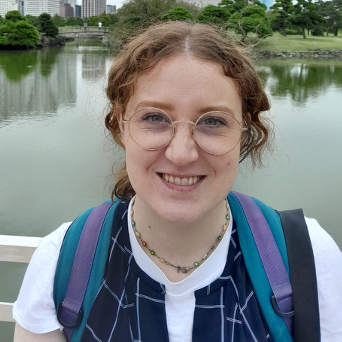

cp-archaic
A ChromoPainter-based method for inferring local ancestry, specifically suited to detecting archaic (e.g. Neanderthal/Denisovan) introgression along the genome.
View on GitHub →Postdoctoral Researcher
computational biologist and population geneticist

I’m a computational biologist and population geneticist interested in inferring population history, ancestry, structure, and adaptation.
Methods and tools I've developed, available on GitHub.
A ChromoPainter-based method for inferring local ancestry, specifically suited to detecting archaic (e.g. Neanderthal/Denisovan) introgression along the genome.
View on GitHub →A tool for inferring the admixture date and number of pulses in a populations, including with different and uncertain sampling ages.
View on GitHub →Showing publications from the last 3 years.
Loading publications from ORCID…
Full record on ORCID.